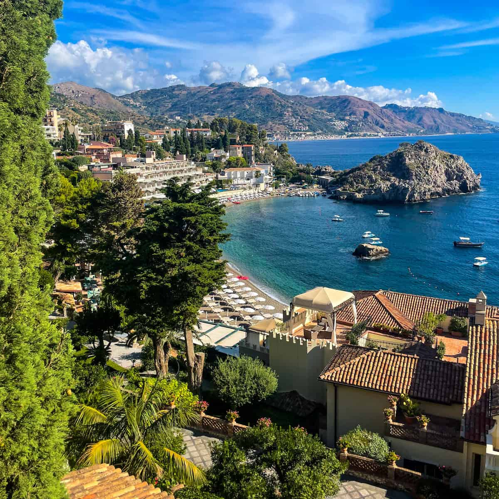

FAVORITE CITIES
Taormina
Taormina is a picturesque hilltop town on the eastern coast of Sicily, Italy, known for its stunning views of the Ionian Sea and Mount Etna. Rich in history and charm, the town features ancient Greek and Roman ruins, including a beautifully preserved amphitheater that still hosts performances today. Taormina’s narrow cobbled streets, upscale boutiques, and inviting cafés make it a favorite destination for tourists seeking a blend of culture, nature, and relaxation. Its mild Mediterranean climate and breathtaking vistas have inspired artists and writers for centuries.
